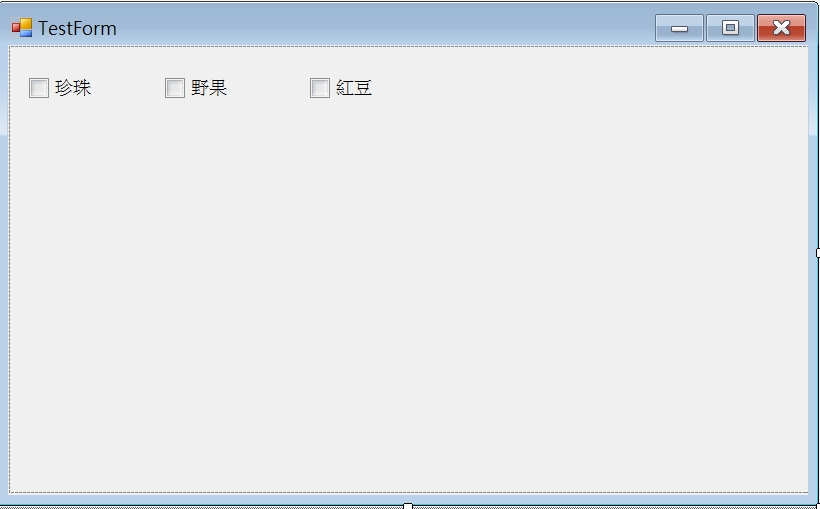

這一篇紀錄使用 C# 去寫 WINFORM 時所有的 CheckBox 使用同一個事件
這樣如果在新增選項時，就不用再去多寫相同的程式碼
像這邊有三個選項

如果是用這種寫法
1 | if(checkbox1.Checked) |
2 | {} |
3 | else |
4 | {} |
當我每新增一個選項時
我是不是就要在去多寫
1 | if(checkbox2.Checked) |
2 | {} |
3 | else |
4 | {} |
5 | if(checkbox3.Checked) |
6 | {} |
7 | else |
8 | {} |
這樣的情形
可能會讓程式碼變得有點多
並且也不好維護
這個時候如果我直接把所有的 checkbox 放在一個區塊裡 像是 panel
並且用迴圈去判斷 panel 裡的所有 checkbox
這樣當我新增一個 checkbox 時我就不用再去寫重複的程式碼
只需要特別設定 checkbox 的命名就可以了
1 | private void CheckListAdd() |
2 | { |
3 | foreach (Control c in panel1.Controls) |
4 | { |
5 | if (c is CheckBox) |
6 | { |
7 | if (((CheckBox)c).Checked == true) |
8 | { |
9 | |
10 | } |
11 | } |
12 | } |
13 | } |
我也可以寫一些 checkbox 的事件
並給所有的 checkbox 使用
1 | private static List<string> CheckText = new List<string>();; |
2 | /// <summary>新增自定義事件，所有CheckBox_CheckedChanged共用</summary> |
3 | private void chk_CheckedChanged(object sender, EventArgs e) |
4 | { |
5 | string chk = ((CheckBox)sender).Name.Substring(3, 2).ToString(); |
6 | if (CheckTextLast.Contains(chk)) |
7 | { |
8 | if (((CheckBox)sender).Checked == false) |
9 | { |
10 | MessageBox.Show("不加"+((CheckBox)sender).Text); |
11 | } |
12 | } |
13 | else |
14 | { |
15 | CheckText.Add(((CheckBox)c).Name.Substring(3, 2).ToString()); |
16 | } |
17 | } |